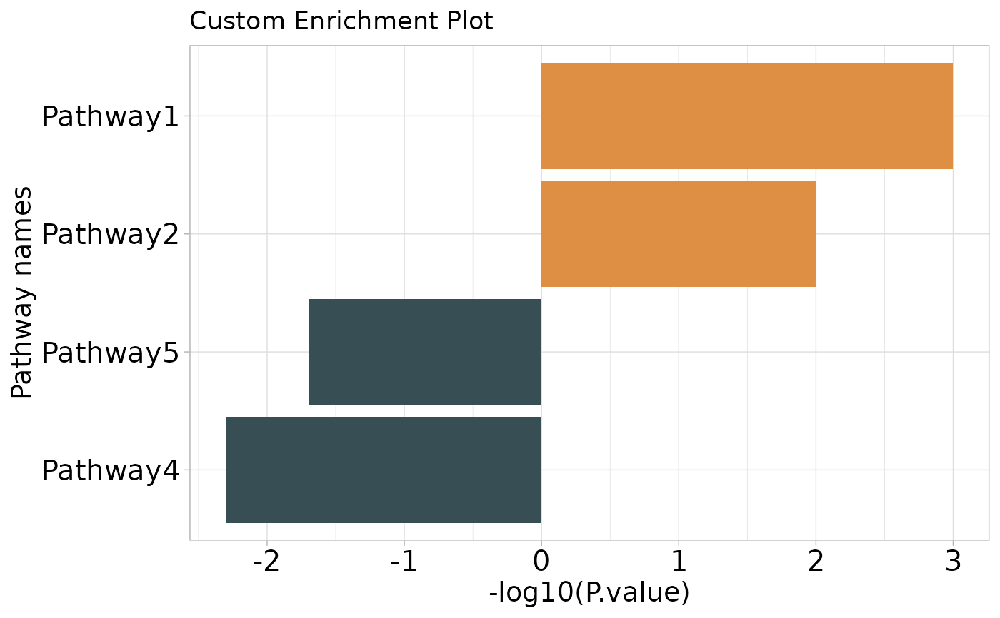

Creates a bar plot visualizing enrichment results for up-regulated and down-regulated terms, using -log10(p-values) to indicate significance.
Usage
enrichment_barplot(
up_terms,
down_terms,
terms = "Description",
pvalue = "pvalue",
group = "group",
palette = "jama",
cols = NULL,
title = "Gene Ontology Enrichment",
width_wrap = 30,
font_terms = 15
)Arguments
- up_terms
Data frame for up-regulated terms.
- down_terms
Data frame for down-regulated terms.
- terms
Column name for term descriptions. Default is "Description".
- pvalue
Column name for p-values. Default is "pvalue".
- group
Column name for group indicator. Default is "group".
- palette
Color palette. Default is "jama".
- cols
Character vector. Custom colors for bars. If NULL, uses palette. Default is NULL.
- title
Plot title. Default is "Gene Ontology Enrichment".
- width_wrap
Maximum width for wrapping pathway names. Default is 30.
- font_terms
Font size for axis labels. Default is 15.
Examples
up_terms <- data.frame(
Description = c("Pathway1", "Pathway2"),
pvalue = c(0.001, 0.01)
)
down_terms <- data.frame(
Description = c("Pathway4", "Pathway5"),
pvalue = c(0.005, 0.02)
)
p <- enrichment_barplot(
up_terms = up_terms,
down_terms = down_terms,
title = "Custom Enrichment Plot"
)
p
